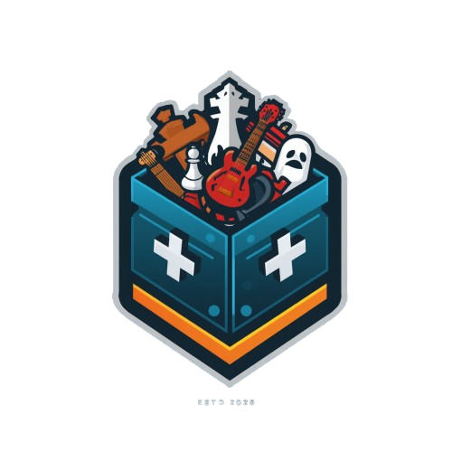

Hello! My name is Stefanos and I'm a 15 year old teen who has a pation about game and website developement. My game dev journey goes way back in the summer of 2023 which is when I discovered the well known application, UNITY. As a beginner developer, I started by watching YT tutorials from creators such as Brakeys and more! They helped me understand the basics of unity and the syntax a C# file should have. Unfortunetely though, I stopped upon the re-opening of school, in september 2023. During the summer, I also experimented with Un- real Engine by Epic Games. It was a cool experience and I really enjoyed the 4k graphics. At the summer of 2024, the same happened and I did return to unity, only to leave it again in september. At that point, ChatGPT had improved its code writing by a lot so it helped me a ton! It was in the 18th of June 2025 where I entered Unity with consistency this time!...
I also have many interests aside from gamedev, which is why I chose this logo for my web as it includes eveything, for example the chess piece symbolises my love for chess, while the guitar the pation I have to keep on learning songs in it, etc.